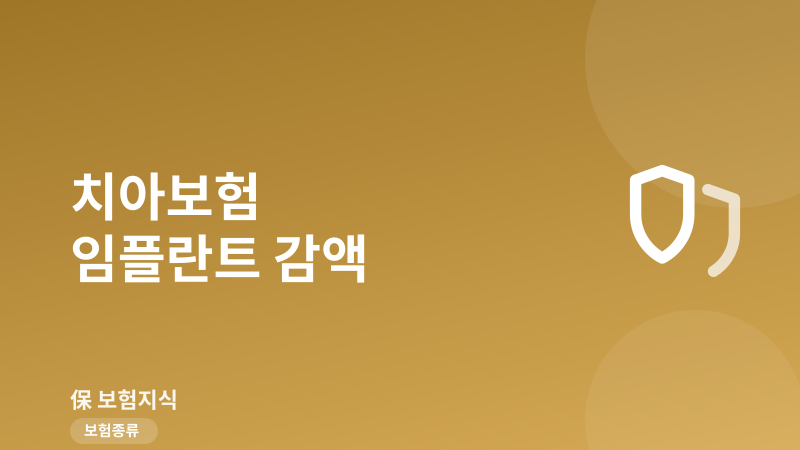
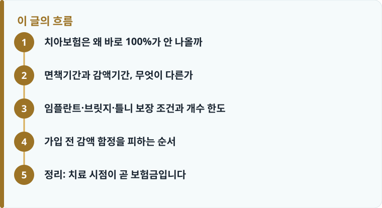

임플란트·브릿지·틀니 같은 보철치료는 가입 직후 바로 100%가 나오지 않고, 면책기간과 감액기간을 모두 지나야 약정 금액이 온전히 지급됩니다.
보철은 보통 90일 면책 뒤 1~2년간 50%만 지급되는 감액이 붙고, 임플란트는 연간 개수 한도(흔히 2~3개)까지만 보장됩니다.
가입 전 이미 진행 중이던 충치·발치·치주질환은 고지 대상이며, 숨기면 부지급이나 계약 해지 사유가 될 수 있습니다.
치아보험은 왜 바로 100%가 안 나올까
치아보험을 드는 사람 대부분은 임플란트나 크라운 같은 큰 치료비를 대비하려는 목적이 큽니다. 그런데 치아는 다른 질병과 달리 가입 전부터 진행되고 있었을 가능성이 높습니다. 충치나 치주질환은 몇 년에 걸쳐 서서히 나빠지기 때문에, 아프기 시작해 보험을 알아본 시점에는 이미 치료가 필요한 상태인 경우가 많습니다. 보험사 입장에서는 이런 '가입 직후 청구'를 그대로 두면 손해율을 감당할 수 없으므로, 면책기간과 감액기간이라는 안전장치를 둡니다.
그래서 치아보험은 가입하자마자 보철 치료비가 전액 나오는 구조가 아닙니다. 보존치료(충치 치료, 아말감·레진 충전 등)는 면책이 짧거나 없는 경우도 있지만, 임플란트·브릿지·틀니 같은 보철치료는 대부분 면책 뒤 다시 감액이 붙습니다. 치아보험의 전체 담보 구조가 낯설다면 치아보험 기본 구조를 먼저 훑어보면 이 글이 훨씬 잘 읽힙니다.
실제 상담 현장에서 가장 많이 나오는 오해가 '가입만 하면 다음 달에 임플란트를 해도 되겠지'라는 생각입니다. 하지만 임플란트 1개에 보통 100만 원에서 200만 원 안팎이 드는데, 이 큰 비용을 노린 즉시 청구를 막기 위해 보험사는 보존치료보다 보철치료에 훨씬 긴 대기 조건을 겁니다. 결국 치아보험은 '아프기 전에 미리 넣어 두는 저축성 준비'에 가깝지, '아픈 뒤에 급히 붙이는 응급 처방'이 아니라는 점을 먼저 이해해야 손해를 줄일 수 있습니다.
면책기간과 감액기간, 무엇이 다른가
두 용어는 자주 혼동되지만 성격이 완전히 다릅니다. 면책기간은 '그 기간에 생긴 치료는 아예 보장하지 않는' 기간입니다. 보철치료는 보통 가입일로부터 90일의 면책기간이 걸리는데, 이 90일 안에 임플란트 진단을 받고 치료하면 보험금이 한 푼도 나오지 않습니다. 즉 면책은 '지급이냐 부지급이냐'를 가르는 문턱입니다.
감액기간은 '보장은 하되 정해진 비율만 깎아서 주는' 기간입니다. 보철은 면책 90일이 끝난 뒤에도 보통 가입 후 1년, 상품에 따라 2년까지 약정 금액의 50%만 지급되는 감액이 이어집니다. 예를 들어 임플란트 1개당 150만 원을 보장하는 계약이라도, 감액기간 중에 심으면 75만 원만 받게 됩니다. 면책과 감액은 서로 다른 개념인데도 상품 안내에서 뭉뚱그려 표현되는 경우가 많아, 이 둘을 구분하는 시각이 중요합니다. 감액이 왜 존재하고 어떻게 계산되는지 원리가 궁금하다면 보장·면책·감액기간 안내에서 개념을 잡아두는 것이 좋습니다.
정리하면 치아보험 임플란트는 '가입 → 90일 면책(부지급) → 1~2년 감액(50%) → 이후 100%'라는 3단계 시간표를 따릅니다. 통증이 이미 있는 상태에서 가입했다면, 실제로 온전한 보장을 받으려면 1년 이상 기다려야 할 수도 있다는 뜻입니다. 감액 비율이 50%가 아니라 30%인 상품, 감액기간이 1년으로 짧은 상품도 있으니, 안내장의 한 줄만 믿지 말고 약관의 보철 담보 항목을 직접 확인하는 습관이 필요합니다.

임플란트·브릿지·틀니 보장 조건과 개수 한도
보철치료라고 다 같은 조건이 아닙니다. 임플란트는 '치아를 뽑은 자리(결손치)'에 인공치아를 심는 경우를 보장하는 것이 원칙이며, 잇몸뼈 이식 같은 부수 시술은 별도이거나 제외되는 경우가 있습니다. 특히 임플란트에는 연간 개수 한도가 붙습니다. 흔히 1년에 2개, 많게는 3개까지만 보장하고 그 이상은 자기 부담이 됩니다. 앞니 전체가 상해 여러 개를 한 번에 심어야 하는 상황이라면, 한도 때문에 두 해에 나눠 시술하는 방식으로 설계를 고민하게 될 수도 있습니다.
브릿지는 빠진 치아 양옆을 깎아 다리를 놓는 방식으로, 임플란트와는 담보·한도가 따로 잡히는 경우가 많습니다. 틀니(의치)는 부분틀니와 완전틀니로 나뉘고, 보통 몇 년에 1회 같은 '기간당 횟수 한도'가 걸립니다. 세 가지 모두 보철이라는 큰 틀에 묶여 있지만 각각 한도와 감액이 별도로 적용되므로, 내가 필요한 치료가 어느 담보에 들어가는지 약관에서 확인해야 합니다. 담보별 지급 조건을 스스로 읽어내는 법은 약관 읽는 법에서 다루니 함께 보면 도움이 됩니다.
또 하나 중요한 것이 고지의무입니다. 가입 전 이미 충치 치료를 받고 있었거나, 발치 예정 진단을 받았거나, 치주질환으로 관리 중이던 사실은 청약서의 알릴 의무 대상입니다. 이를 알리지 않고 가입한 뒤 곧바로 임플란트를 청구하면, 보험사는 '가입 전 발생한 치료'로 보아 부지급하거나 계약을 해지할 수 있습니다. 특히 치과 진료 기록은 국민건강보험 청구 내역으로 확인되기 때문에 숨기기 어렵습니다. 정직한 고지가 결국 분쟁을 막는 가장 확실한 방법입니다.
작성·검수 기준
이 글은 특정 치아보험 상품의 가입을 권유하기 위한 것이 아니라, 임플란트·브릿지·틀니 보철 보장에서 반복적으로 문제가 되는 면책기간, 감액기간, 개수 한도, 고지의무를 이해하도록 돕기 위해 작성했습니다. 면책·감액 기간의 길이(예: 면책 90일, 감액 1~2년 50%)와 개수 한도는 가입 시점의 약관과 상품에 따라 달라질 수 있습니다.
정확한 보장 범위와 지급 비율은 본인 증권의 약관과 상품설명서를 확인하고, 가입 전 점검이 필요하다면 가입 전 체크리스트를 함께 활용하는 것이 가장 안전합니다.
가입 전 감액 함정을 피하는 순서
같은 치아보험이라도 언제 가입하고 언제 치료하느냐에 따라 받는 금액이 크게 달라집니다. 아래 순서대로 확인하면 '기대보다 적게 나왔다'는 상황을 상당 부분 줄일 수 있습니다.
- 보철(임플란트·브릿지·틀니)의 면책기간(보통 90일)을 먼저 확인합니다.
- 감액기간과 감액 비율(예: 1~2년간 50% 지급)을 담보별로 확인합니다.
- 임플란트 연간 개수 한도(흔히 2~3개)와 개당 보장금액을 확인합니다.
- 현재 치료 중이거나 예정된 치아가 있으면 청약서에 정확히 고지합니다.
- 통증이 없는 건강한 시기에 가입해 면책·감액기간을 미리 넘겨 둡니다.
정리: 치료 시점이 곧 보험금입니다
치아보험 임플란트 보장의 핵심은 '얼마를 보장하느냐'가 아니라 '언제부터 얼마가 나오느냐'입니다. 면책 90일과 감액 1~2년, 그리고 연간 개수 한도라는 세 개의 조건을 미리 알고 건강할 때 가입해 두면, 정작 치료가 필요할 때 감액 없이 온전한 보험금을 받을 수 있습니다. 반대로 아픈 뒤에 급하게 가입하면 고지의무와 감액이 겹쳐 실망하기 쉽습니다.
다른 보험 정보 글이 궁금하다면 보험지식 블로그에서 이어 읽어 보세요. 가입 전에는 반드시 약관과 상품설명서를 확인하는 것이 가장 안전한 방법입니다.